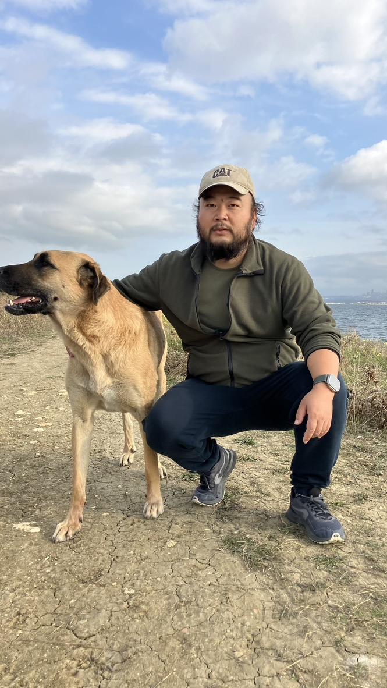

十年脱发后，我在土耳其做了植发——从患者到中介，再到彻底退出
2017年，我通过Google搜索了解到土耳其植发。当时并没有考虑国内植发，单纯是因为信任。那时候植发概念还比较新。我和诊所的中文销售联系后，很快就决定去做。
那个时候我在国内工作，第一次植发做了3100单位，效果和我预期有差距，所以后来又做了第二次植发。那时候我也和诊所联系，说可以给我佣金。于是我在天涯和知乎发了文章分享经历，天涯的帖子现在已经看不到了，知乎旧文还在这里： 知乎旧文：《土耳其植发记，十年脱发，亲身经历》。 承蒙大家信任，当时慢慢开始有收入进来。
后来职业发展遇到瓶颈，我就辞职专门做植发中介。我是40岁那年辞职的。当时刚刚听到武汉的消息，还没太在意，但疫情传播得很快。
那时候我去土耳其玩了一趟，回来的时候机场反复确认了好几次才让我登机。之后国内出行越来越不方便。临近封城时，有几位客人买票退票未能成行。后来有的客人选择了退款，前年还有一位客人过来完成了植发。

疫情期间，我又到土耳其玩了一趟。后来想想，既然国内不太方便，我就留在了这里。
疫情开放后，植发业务慢慢恢复，我陆续服务了不少客户，推广也从线下转到线上。直到上个月，因为一些原因，我决定彻底结束中介生涯。
现在，我把这十年作为一个回顾。因为已经没有利益关系了，所以我做了这个资料分享站。
这个行业为什么让我越来越想把话说明白
植发市场其实很新，2002年世界上才首次提出FUE技术，2005年才开始规模应用。不过短短二十几年，中间还经历了疫情几年，整个行业仍然处于野蛮生长阶段，国内的大型植发机构都已上市。
这十年我见了太多真实的情况。
比如小红书上一个博主分享植发经历，用了很多美颜照片，吸引很多人去某家诊所。我亲自去看过，也通过WhatsApp和他们联系了解过。那家诊所当时Google评价只有10个，而且全是刷的。我去实地询问，他们所在的医院大楼说有几个手术室对外出租。
最近我查土耳其卫生部合法诊所名单时，发现查不到他们，现在他们的网站也处于维护状态。
还有一个国内过来的人，和我当初想法一样，想做植发中介，拍了一些照片和视频，在网络上还对我进行了一些攻击。但那家诊所同样不在合法名单里。
所以从一个普通植发患者的角度，我想问：我们究竟应该选择哪家诊所？都说土耳其是世界植发之都，是不是随便哪家都可以？
答案显然不是。
我最后采用的判断方法其实很简单
植发既然叫手术，我就先去查了土耳其卫生部的法规。植发有四个步骤：1.设计、2.取发、3.打孔、4.移植。政府要求非常明确，设计和打孔必须由具有植发资格的医生亲自操作，其他步骤可以在医生监督下，由具备资格的助手完成。这是政府原文： 土耳其卫生部法规原文（2025 修订版）。
发际线和手术方案设计，法规要求由医生完成。
可以有团队参与，但要看医生是否真正主导。
关键外科步骤，法规明确要求由医生完成。
可由合格助手参与，但不能脱离医生监督。
政府还在网站上公布了所有具备植发资格的诊所、门诊和医院名单。目前伊斯坦布尔有230家，安卡拉有43家，官方查询入口是： 土耳其卫生部官方植发中心查询入口。 因为大多数国内朋友都来伊斯坦布尔，所以我先整理了这里的数据，其他城市后续会补充。
从这里就能看出，网上常说伊斯坦布尔有700家甚至1000家植发诊所，但按照官方标准，目前只有230家。
那么，是不是只要合法的诊所，随便选一家就可以呢？合法只是最基本的底线。正如罗翔老师所说，守法不能代表道德水平高，而是一个人的最低底线。
合法只是底线，接下来要看医生
法律既然规定设计和打孔必须由医生操作，那么到哪里去找好的医生呢？
很简单，目前全球植发领域最权威的行业协会是ISHRS（国际植发协会），植发医生唯一的国际专项认证是ABHRS。
大家可以直接去官网验证： ISHRS 官方查找医生页面 和 ABHRS 官方认证说明。
通过ISHRS官网可以搜索到，整个土耳其的ISHRS高级会员（Fellow）、会员（Member）以及前会员一共只有14位医生。我也查了中国，目前只有3位。
因为我身在伊斯坦布尔，所以我对这14位医生的公开资料、网站和论坛评价做了整理。可以看到，有的医生独立执业，有的开了小规模诊所，有的学术型背景深厚，很多医生的职业背景是整形外科、皮肤科或外科，这些都是高度相关的专业。
同样，我对230家诊所的官网也做了研究。只要官网列出医生的，我都看了。很遗憾，大部分公开信息很少，更多是营销话语，比如参加了什么会议、声称1996年就开始做植发等。
还有一些诊所贴出ISHRS副会员（Associate Member）的证书。我专门查过，这个证书只要有医生执照、对植发感兴趣、交会费就能参加，ISHRS官网查不到他们的记录，也不允许他们用ISHRS标志进行营销。
所以这个网站现在做的，其实就是两套数据库
简单来说，我现在做了两个数据库。
第一套是 14 位精品医生库。 他们有的独立执业，也就是医生主刀加少量助手；有的在小诊所，医生亲自设计和打孔。安卡拉有一位医生甚至做手工FUE和取发。价格有高有低，有些其实比大型医疗旅游诊所更便宜。
值得一提的是Kayihan Sahinoglu，学术大牛，在伊斯坦布尔大学医学院教授解剖学20多年，荣誉无数。他的网页只是一个简单的邮箱，但我已经找到他的手机号，大家有兴趣的可以直接联系医生。以后欢迎大家把真实的体验和感受分享给我，我来完善数据库，帮助更多人。
关于 诊所库。 我分成四类，有医生且公开价格的、有医生但未公开价格的、综合医院、以及既未公开医生也未公开价格的。
未公开价格是普遍现象，因为手术千人千方，具体需要沟通，但有时也可能是营销手段。没有具名医生的诊所，就很难判断实际是谁在操作，可能就是医生挂名、团队完成。
有医生且公开价格的诊所，通常规模较大，社交媒体营销能力强。我研究了他们的套餐：医生打孔套餐从5500欧元到8000欧元不等；普通FUE套餐2250欧元；DHI套餐3500欧元。这些套餐大多没提及医生，意味着医生主要负责设计，实际取发、打孔、移植由团队完成。
护士不是不能做，但按照法律明文要求，打孔和设计他们肯定不能做。
我知道，销售和博主会说“团队经验很熟练”，但法律就是法律，现状也是现状。
关于价格，我最后只想说一句实话
另外关于价格，我做中介这么多年，很清楚一点：只要自己用WhatsApp直接和官网客服联系，通常都能拿到15%左右甚至更高的直客折扣，而且能体验官方的完整服务。
我只是把我这十年来对行业的了解，以及对公开资料的整理搜索，原原本本地讲出来而已。没有利益相关，具体如何选择，由大家自己决定。毕竟这是自己脑袋上的事，独立思考总归是好的。
如果您对诊所或医生的真实经历、评价有补充，或者发现数据有误，欢迎通过下方提交反馈页面告诉我。
我将持续完善这个资料站，帮助更多人做出更理性的选择。
谢谢大家。
更新于 2026-03-20。本文为网站缘起与资料整理逻辑说明，既包含个人经历，也包含公开法规和公开资料的整理。
本文仅用于说明网站创建背景与信息整理方法，不构成医疗建议，也不构成对任何医生、机构或服务结果的推荐与承诺。请以官方信息和面诊结果为准。